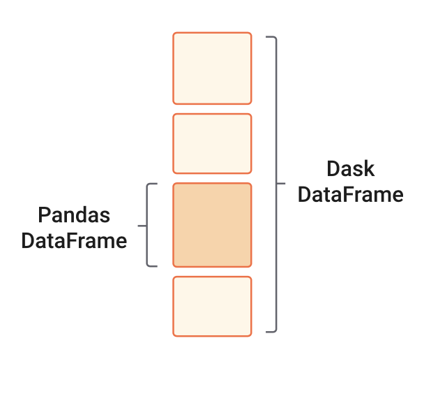

import os
import requests 9 Parallelization with Dask
9.1 Introduction
Dask is a library for parallel computing in Python. It can scale up code to use the full capacity of your personal computer or to distribute work in a cloud cluster. By mirroring APIs of other commonly used Python libraries such as Pandas, NumPy, and Scikit-learn, Dask provides a familiar interface that makes it easier to parallelize your code. In this lesson, we will get acquainted with some of Dask’s most commonly used objects and Dask’s way of distributing and evaluating computations.

9.2 Objectives
- Become familiar with Dask processing workflow:
- What are the client, scheduler, workers, and cluster
- https://www.datarevenue.com/en-blog/understanding-dask-architecture-client-scheduler-workers
- Understand delayed computations and “lazy” evaluation
- Obtain information about computations via the Dask dashboard
- https://www.youtube.com/watch?v=N_GqzcuGLCY
- Learn basics of
dask.arraysanddask.dataframes:- Load data and specifying chunk sizes
- https://saturncloud.io/blog/a-data-scientist-s-guide-to-lazy-evaluation-with-dask/
- Interpret a task graph
- Integrate
xarraywith Dask:- https://docs.xarray.dev/en/stable/user-guide/dask.html
- Share best practices and resources for a deeper dive
- https://docs.dask.org/en/stable/best-practices.html#load-data-with-dask
- https://coiled.io/blog/common-dask-mistakes/
9.3 Possible computing examples:
https://docs.dask.org/en/latest/10-minutes-to-dask.html
https://tutorial.dask.org/00_overview.html
9.4 Dask Cluster
Dask clusters have three main components for processing computations in parallel. These are the client, the scheduler and the workers.
When we code, we communicate directly with the client, which is responsible for submitting tasks to be executed to the scheduler.
After receiving the tasks from the client, the scheduler determines how tasks will be distributed among the workers and coordinates them to process tasks in parallel.
Finally, the workers are threads, processes, or separate machines in a cluster. They compute tasks and store and return computations results.
In order to interact with the client and generate tasks that can be processed in parallel we need to use Dasks’ objects to read our data. Here we will see examples of how to use dask.dataframes and dask.arrays.

Note
We can deploy a Dask cluster on a single machine or an actual cluster with multiple machines. Here we will use the Dask cluster instead of the default Dask scheduler to take advantage of the cluster Dashboard, which keeps track of the performance and progress of our computations. Read more about Dask Clusters
9.5 Dask Data Frames
When we analyze tabular data, we usually start our analysis by loading it into memory as a Pandas DataFrame. But, what if this data does not fit in memory? Or maybe our analyzes crash because we run out of memory. These scenarios are typical entry points into parallel computing. In such cases, Dask’s scalable alternative to a Pandas DataFrame is the dask.dataframe. A dask.DataFrame is made up of many pd.DataFrames, each containing a subset of rows of the original dataset. We call each of these pandas pieces a partition of the dask.DataFrame.

For this example we will use a dataset including weather and soil condition measurements at six forest stands in northeastern Siberia. The data has been collected since 2014 and is archived at the Arctic Data Center Loranty & Alexander, doi:10.18739/A24B2X59C. Today we will use the soil mositure measurements from this dataset. Just as we did on the previous lesson, we download the data using the requests package and the link to the data obtained from the Arctic Data Center website.
url = 'https://arcticdata.io/metacat/d1/mn/v2/object/urn%3Auuid%3A27e4043d-75eb-4c4f-9427-0d442526c154'
response = requests.get(url)
open("dg_soil_moisture.csv", "wb").write(response.content)121002029We can see the file is 115MB. Next we import the data as dask.dataframe.
import dask.dataframe as dd
fp = os.path.join(os.getcwd(),'dg_soil_moisture.csv')
df = dd.read_csv(fp, blocksize = '20MB' , encoding='ISO-8859-1')
dfDask DataFrame Structure:
| timestamp | year | doy | hour | minute | site | logger | port | sensor | sensorZ | m_soil | unit | |
|---|---|---|---|---|---|---|---|---|---|---|---|---|
| npartitions=6 | ||||||||||||
| object | int64 | int64 | int64 | int64 | object | object | object | object | int64 | float64 | object | |
| ... | ... | ... | ... | ... | ... | ... | ... | ... | ... | ... | ... | |
| ... | ... | ... | ... | ... | ... | ... | ... | ... | ... | ... | ... | ... |
| ... | ... | ... | ... | ... | ... | ... | ... | ... | ... | ... | ... | |
| ... | ... | ... | ... | ... | ... | ... | ... | ... | ... | ... | ... |
Dask Name: read-csv, 1 graph layer
df.head()| timestamp | year | doy | hour | minute | site | logger | port | sensor | sensorZ | m_soil | unit | |
|---|---|---|---|---|---|---|---|---|---|---|---|---|
| 0 | 2014-07-07 16:30:00 | 2014 | 188 | 16 | 30 | MDF1 | MDF1met | Port 3 | 5TM Moisture/Temp | -6 | 0.273 | m³/m³ VWC |
| 1 | 2014-07-07 16:30:00 | 2014 | 188 | 16 | 30 | MDF1 | MDF1met | Port 4 | 5TM Moisture/Temp | -11 | 0.345 | m³/m³ VWC |
| 2 | 2014-07-07 17:00:00 | 2014 | 188 | 17 | 0 | LDF2 | LDF2met | Port 3 | 5TM Moisture/Temp | -8 | 0.308 | m³/m³ VWC |
| 3 | 2014-07-07 17:00:00 | 2014 | 188 | 17 | 0 | LDF2 | LDF2met | Port 4 | 5TM Moisture/Temp | -13 | 0.325 | m³/m³ VWC |
| 4 | 2014-07-07 17:00:00 | 2014 | 188 | 17 | 0 | MDF1 | MDF1met | Port 3 | 5TM Moisture/Temp | -6 | 0.283 | m³/m³ VWC |
Note
UnicodeDecodeError: ‘utf-8’ codec can’t decode byte 0xb3 in position 192: invalid start byte
# import chardet
# with open(fp, 'rb') as rawdata:
# result = chardet.detect(rawdata.read(100000))
# resultThe application programming interface (API) of a dask.DataFrame is a subset of the pd.DataFrame API. So if you are familiar with pandas, many of the core pd.DataFrame methods directly translate to dask.DataFrames.
A major difference between both objects is that dask.DataFrames are lazy, meaning that they do not evaluate until we explicitly ask for a result using the compute method. This is the case with most Dask workloads.
## THIS IS AN EXAMPLE OF LAZY COMPUTATIONThis means that your framework will queue up sets of transformations or calculations so that they are ready to run later, in parallel. This is a concept you’ll find in lots of frameworks for parallel computing, including Dask. Your framework won’t evaluate the requested computations until explicitly told to. This differs from “eager” evaluation functions, which compute instantly upon being called.
https://saturncloud.io/blog/a-data-scientist-s-guide-to-lazy-evaluation-with-dask/ Lead into task graphs.
### THIS IS AN EXAMPLE OF TASK GRAPH9.6 Dask Arrays
If you want scalable NumPy arrays, then start with Dask array

9.7 Best Practices
It is important to remember that, while APIs may be similar, some differences do exist. Additionally, the performance of some algorithms may differ from their in-memory counterparts due to the advantages and disadvantages of parallel programming. Some thought and attention is still required when using Dask. https://docs.dask.org/en/latest/user-interfaces.html
Warning
For data that fits into RAM, Pandas can often be faster and easier to use than Dask DataFrame. While “Big Data” tools can be exciting, they are almost always worse than normal data tools while those remain appropriate. https://docs.dask.org/en/stable/dataframe-best-practices.html
9.8 TODO
- Find dataset(s) to use:
- https://arcticdata.io/catalog/view/doi%3A10.18739%2FA24B2X59C “Understory micrometorology across a larch forest density gradient in northeastern Siberia 2014-2020” ~50MB, has a few different axes to filter on
- https://arcticdata.io/catalog/view/doi%3A10.18739%2FA28W38388 “River and lake ice phenology data for Alaska and Northwest Canada from 1882 to 2021”
9.8.1 Bryce’s Notes
https://www.dask.org/
https://docs.xarray.dev/en/stable/user-guide/dask.html#dask
https://stephanhoyer.com/2015/06/11/xray-dask-out-of-core-labeled-arrays/
https://examples.dask.org/xarray.html
Good example to base exercise on: https://examples.dask.org/applications/image-processing.html
Split-apply-combine
Dask stuff
- Lazy eval (compute())
- Grouping compute() calls versus calling compute() multiple times
- Dask Array
- Dask DataFrame
- Skip or just mention Bag, Delayed, Futures? Not sure yet.
- visualize()
- Choosing how many chunks to divide work into
- Task overhead
- Distributed dask?
- Persist > Dask is convenient on a laptop. It installs trivially with conda or pip and extends the size of convenient datasets from “fits in memory” to “fits on disk”.
- Lazy eval (compute())
– From https://docs.dask.org/en/stable/